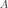
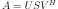
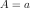
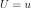
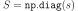
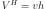
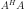
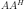

numpy.linalg.svd¶
-
numpy.linalg.svd(a, full_matrices=True, compute_uv=True)[source]¶ Singular Value Decomposition.
When a is a 2D array, it is factorized as
u @ np.diag(s) @ vh = (u * s) @ vh, where u and vh are 2D unitary arrays and s is a 1D array of a‘s singular values. When a is higher-dimensional, SVD is applied in stacked mode as explained below.Parameters: a : (..., M, N) array_like
A real or complex array with
a.ndim >= 2.full_matrices : bool, optional
If True (default), u and vh have the shapes
(..., M, M)and(..., N, N), respectively. Otherwise, the shapes are(..., M, K)and(..., K, N), respectively, whereK = min(M, N).compute_uv : bool, optional
Whether or not to compute u and vh in addition to s. True by default.
Returns: u : { (..., M, M), (..., M, K) } array
Unitary array(s). The first
a.ndim - 2dimensions have the same size as those of the input a. The size of the last two dimensions depends on the value of full_matrices. Only returned when compute_uv is True.s : (..., K) array
Vector(s) with the singular values, within each vector sorted in descending order. The first
a.ndim - 2dimensions have the same size as those of the input a.vh : { (..., N, N), (..., K, N) } array
Unitary array(s). The first
a.ndim - 2dimensions have the same size as those of the input a. The size of the last two dimensions depends on the value of full_matrices. Only returned when compute_uv is True.Raises: LinAlgError
If SVD computation does not converge.
Notes
Changed in version 1.8.0: Broadcasting rules apply, see the
numpy.linalgdocumentation for details.The decomposition is performed using LAPACK routine
_gesdd.SVD is usually described for the factorization of a 2D matrix . The higher-dimensional case will be discussed below. In the 2D case, SVD is written as , where , ,  and . The 1D array s contains the singular values of a and u and vh are unitary. The rows of vh are the eigenvectors of  and the columns of u are the eigenvectors of . In both cases the corresponding (possibly non-zero) eigenvalues are given by
s**2.If a has more than two dimensions, then broadcasting rules apply, as explained in Linear algebra on several matrices at once. This means that SVD is working in “stacked” mode: it iterates over all indices of the first
a.ndim - 2dimensions and for each combination SVD is applied to the last two indices. The matrix a can be reconstructed from the decomposition with either(u * s[..., None, :]) @ vhoru @ (s[..., None] * vh). (The@operator can be replaced by the functionnp.matmulfor python versions below 3.5.)If a is a
matrixobject (as opposed to anndarray), then so are all the return values.Examples
>>> a = np.random.randn(9, 6) + 1j*np.random.randn(9, 6) >>> b = np.random.randn(2, 7, 8, 3) + 1j*np.random.randn(2, 7, 8, 3)
Reconstruction based on full SVD, 2D case:
>>> u, s, vh = np.linalg.svd(a, full_matrices=True) >>> u.shape, s.shape, vh.shape ((9, 9), (6,), (6, 6)) >>> np.allclose(a, np.dot(u[:, :6] * s, vh)) True >>> smat = np.zeros((9, 6), dtype=complex) >>> smat[:6, :6] = np.diag(s) >>> np.allclose(a, np.dot(u, np.dot(smat, vh))) True
Reconstruction based on reduced SVD, 2D case:
>>> u, s, vh = np.linalg.svd(a, full_matrices=False) >>> u.shape, s.shape, vh.shape ((9, 6), (6,), (6, 6)) >>> np.allclose(a, np.dot(u * s, vh)) True >>> smat = np.diag(s) >>> np.allclose(a, np.dot(u, np.dot(smat, vh))) True
Reconstruction based on full SVD, 4D case:
>>> u, s, vh = np.linalg.svd(b, full_matrices=True) >>> u.shape, s.shape, vh.shape ((2, 7, 8, 8), (2, 7, 3), (2, 7, 3, 3)) >>> np.allclose(b, np.matmul(u[..., :3] * s[..., None, :], vh)) True >>> np.allclose(b, np.matmul(u[..., :3], s[..., None] * vh)) True
Reconstruction based on reduced SVD, 4D case:
>>> u, s, vh = np.linalg.svd(b, full_matrices=False) >>> u.shape, s.shape, vh.shape ((2, 7, 8, 3), (2, 7, 3), (2, 7, 3, 3)) >>> np.allclose(b, np.matmul(u * s[..., None, :], vh)) True >>> np.allclose(b, np.matmul(u, s[..., None] * vh)) True